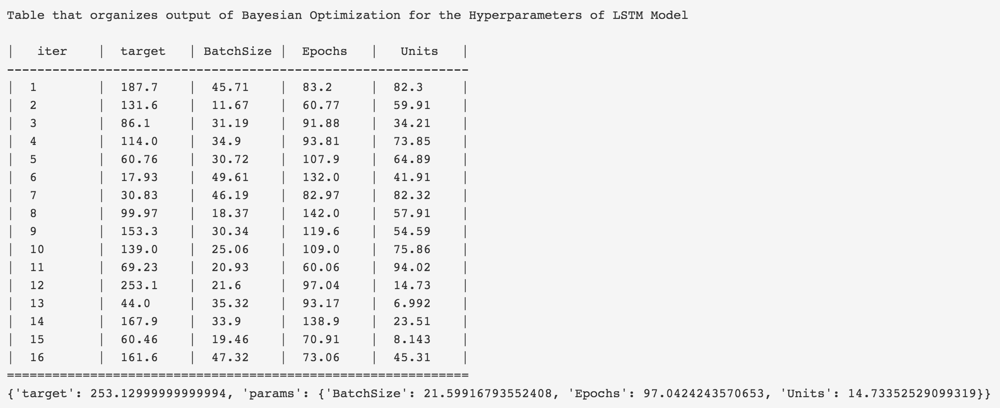
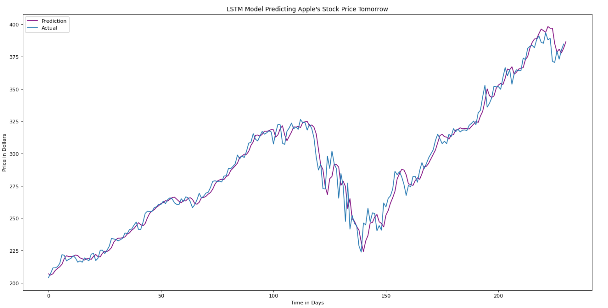
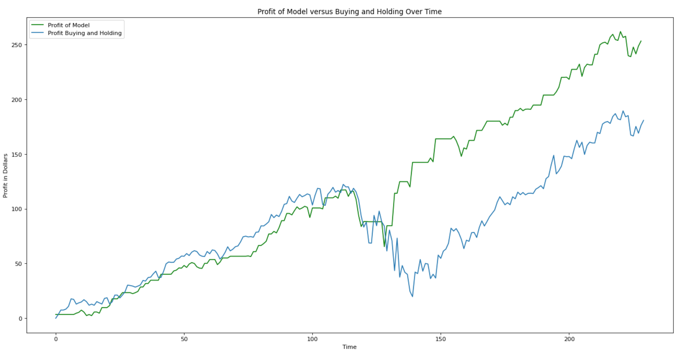

The focus of this project was to see just how accurate LSTM Neural Networks are when trying to predict daily future stock prices. Aside from recent developments with Transformer Neural Networks, the LSTM Neural Network is one of the most reliable neural networks out there, and far superiour to the vanilla RNNs from the days of old, due to LSTM's ability to solve the vanishing/exploding gradient problem.
This model was trained on roughly 4 years worth of AAPL stock price data, and aims to predict the daily prices of the next year. It does not predict the whole years worth of prices all at once, rather it looks backwards 21 days prior, and uses this data in order to predict the 22nd day. It does this again with days 2-22 in order to predict day 23, and so on and so forth. So each prediction is only a single day ahead, and we do this over the course of a year. When the model predicts tomorrow's closing price will be lower than today, and we already own the stock, it sells, and when tomorrow's predicted price is higher than today, and we already own the stock, the model will hold. When we don't own the stock, a forecast of a lower price makes the model stand pat, and a forecast of a higher price executes a buy order.
In order to choose the correct number of epochs, batchsize, and units for optimal accuracy while still saving computational time, I elected to use Bayesian Optimization. This method leverages a Gaussian Process in order to optimally explore areas where a maximum is likely to occur, so we do not have to waste time grid searching, or do random selection. The selections the model made for batchsize, epochs, and units are laid out in the image below.

Below is the graphical output of our LSTM Neural Network when tested on a year of data that it has not seen. The model performs pretty well, and seems to fit the trend of the true AAPL stock price movement.

Below is the profit of the model using the LSTM Neural Network when compared to the standard buy and hold strategy over the course of the year. The green line is the model, and the blue line is the stock. The model found success by avoiding large dips in price by holding when times were bad, and then quickly buying back into the stock when an upward trend was once again realized.

Neural Network training is fairly complicated with a high degree of room for adjustments and modifications that can drastically improve model accuracy. I would like to explore this idea much more in the future, and possibly see if more success can be found tuning seperate hyperparameters, using different stocks as data sets, and different styles of training the data.